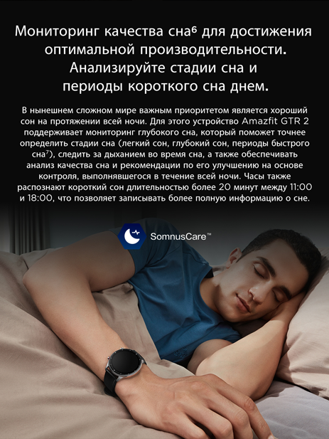
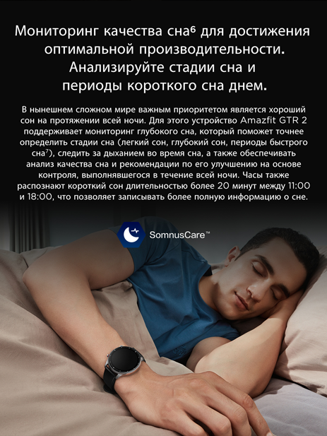

Amazfit GTR 2
Новый стандарт классики
Трехмерный изогнутый дисплей без безеля | Комплексное отслеживание состояния здоровья и тренировок
Хранение и воспроизведение музыки | 14 дней работы от батареи
10090 р
1990 р
Новый стандарт классики
Трехмерный изогнутый дисплей без безеля | Комплексное отслеживание состояния здоровья и тренировок
Хранение и воспроизведение музыки | 14 дней работы от батареи
Монолитный дизайн Amazfit GTR 2 с трехмерным стеклом, которое органично переходит в корпус из нержавеющей стали, улучшает визуальную эстетику часов и расширяет зону видимости.
Большой дисплей AMOLED высокого разрешения с плотностью 326 пикселей на дюйм обеспечивает четкое и яркое изображение при просмотре времени и любимых приложений. В нашем магазине циферблатов предоставлены десятки различных циферблатов, которые можно менять в зависимости от настроения. Кроме того, можно менять виджеты, которые обеспечивают быстрый доступ к нужной информации. Также можно проявить творческий подход, устанавливая в качества фона циферблата Amazfit GTR 2 свои любимые изображения.
Amazfit GTR 2 — это превосходные часы
со множеством полезных функций,
позволяющие уверенно контролировать время.
Постоянно включенный дисплей позволяет видеть время,
даже когда прочие функции часов неактивны. Это держит вас в курсе каждого важного момента жизни, при этом доступны десятки рисунков для постоянно включенного дисплея, из которых вы можете выбирать понравившиеся. Для дополнительного удобства и экономии заряда батареи вы можете отключить экран, просто не двигая рукой или закрыв экран.
Часы Amazfit GTR 2 оборудованы разработанным компанией Huami биологическим оптическим датчиком отслеживания второго поколения BioTracker™ 2 PPG, позволяющим выполнять круглосуточный мониторинг сердцебиения. Он покрывает зоны пульса и выдает предупреждения, когда частота пульса повышена, информируя вас об эффективности тренировки и снижая риски упражнений.
Насыщение крови кислородом является одним из важнейших факторов здоровья человека, поэтому в GTR 2 добавлена функция измерения этого параметра, позволяющая пользователю отслеживать свое состояние. Измеряйте уровень кислорода в крови во время продолжительной умственной работы или такой физической активности, как марафон или высокоинтенсивные тренировки на открытом воздухе, чтобы полностью контролировать свое здоровье.
PAI™ (индикатор персональной активности) — это система оценки состояния здоровья, которая с помощью алгоритмов преобразует комплексные данные, такие как частота сердцебиения, продолжительность активности и другая информация о здоровье, в одну понятную пользователям оценку их физического состояния. Эта функция отслеживает все виды упражнений в любое время и в любом месте, а также персонализирует систему оценки состояния здоровья для каждого пользователя на основании его данных о здоровье.
В нынешнем сложном мире важным приоритетом является хороший сон на протяжении всей ночи. Для этого устройство Amazfit GTR 2 поддерживает мониторинг глубокого сна, который поможет точнее определить стадии сна (легкий сон, глубокий сон, периоды быстрого сна), следить за дыханием во время сна, а также обеспечивать анализ качества сна и рекомендации по его улучшению на основе контроля, выполнявшегося в течение всей ночи. Часы также распознают короткий сон длительностью более 20 минут между 11:00 и 18:00, что позволяет записывать более полную информацию о сне.
Измеряйте свой личный уровень стресса (низкий, нормальный, средний или высокий) в любое время, когда чувствуете себя подавлено. Это позволит понять, когда необходимо расслабиться и отдохнуть.

Часы Amazfit GTR 2 водонепроницаемы на глубине до 50 метров, что традиционно соответствует уровню высокотехнологичных часов. Вы можете спокойно носить их как денем, так и во время занятий плаванием.
Часы Amazfit GTR 2 включают 12 спортивных режимов, среди которых ходьба, плаванье, альпинизм, бег по пересеченной местности и катание на лыжах. Активируйте нужный спортивный режим, и после окончания упражнения часы создадут в мобильном приложении аналитический отчет, который поможет вам постоянно совершенствовать план тренировок.
Сложная конструкция схемы, тонкий корпус и большая емкость аккумулятора (471 мА ч) позволяет часам GTR 2 работать от батареи до 14 дней. Поэтому вы можете быть уверенны, что не останетесь без поддержки, куда бы упражнения не привели вас.
Часы Amazfit GTR 2 позволяют управлять воспроизведением музыки на смартфоне через подключение по Bluetooth. Также часы имеют собственное хранилище для музыки размером 3 ГБ10, где можно сохранить 300–600 любимых песен с мобильного телефона. Вы можете отложить телефон, надеть беспроводные наушники Amazfit PowerBuds11 и слушать свои любимые плей-листы во время тренировки в любое время, где бы вы ни находились.
Они оснащены микрофоном и динамиком, которые позволяют отвечать на звонки на часах, когда это неудобно делать на телефоне. Подключите GTR 2 к мобильному телефону через Bluetooth, и вы больше не пропустите важный звонок.
Просто поднимите немного вверх кисть руки и скажите системе Alexa, что вам нужно: настроить будильники и таймеры, узнать, какая стоит погода, управлять умными домашними устройствами, создать списки покупок, задать вопросы, узнать перевод слов и не только.
*Примечание: поддержка Alexa будет реализована в беспроводном обновлении (OTA). Alexa доступна не во всех странах и регионах. Чтобы просмотреть доступные страны и регионы, поддерживаемые языки, а также методы активации и использования Alexa на часах Amazfit GTR 2, перейдите на сайт support.amazfit.com.
Часы Amazfit GTR 2 оснащены функцией автономного голосового управления. Вы можете выполнять голосовые операции с часами без доступа к Интернету, в том числе включать спортивные режимы или открывать функцию мониторинга сердцебиения — ваши часы должны делать все, что вы хотите, даже без касания экрана.
В устройстве Amazfit GTR 2 добавлена функция карточек-ярлыков. Просто проведите пальцем вправо, чтобы просмотреть такую информацию, как прогноз погоды, события, обратный отсчет, работающие в фоновом режиме программы и общие сведения о приложениях. Это очень удобно. Проведите пальцем влево, чтобы запустить настраиваемое приложение экрана быстрого доступа, которое позволяет мгновенно открывать нужные стандартные функции.
Улучшенная сенсорная вибрация GTR 2 обеспечивает более четкую и быструю реакцию при получении телефонных звонков и уведомлений. Благодаря сенсорному линейному мотору можно установить различные уровни интенсивности и продолжительности вибраций для максимального комфорта.
Экран часов Amazfit GTR 2 может поворачиваться на 180°, что удобно для правшей и левшей. Экран также можно заблокировать с помощью пароля, чтобы предотвратить доступ к ним других людей, когда часы находятся не на руке. Функция определения того, надеты часы или нет, может даже автоматически блокировать13 часы при их снятии с руки.
Часы Amazfit GTR 2 могут эффективно обрабатывать ваше персональное расписание на день, уведомлять вас о входящих звонках или сообщениях, а также напоминать о необходимости разминки, если вы сидите слишком долго. Кроме того, они отслеживают события и обеспечивают доступ к функции «Не беспокоить», секундомеру и прогнозу погоды, а также позволяют настраивать будильники и таймеры.
Для заказа Amazfit GTR 2 со скидкой выполните 4 простых шага:
- Оставьте заявку через форму обратной связи
- Наш менеджер свяжется с вами для согласования деталей заказа
- мы доставим ваш заказ почтой в течении 3-7 рабочих дней
- Оплатите заказ на почте при получении товара
 
 

Для заказа Amazfit GTR 2 со скидкой выполните 4 простых шага:
- Оставьте заявку через форму обратной связи
- Наш менеджер свяжется с вами для согласования деталей заказа
- мы доставим ваш заказ почтой в течении 3-7 рабочих дней
- Оплатите заказ на почте при получении товара